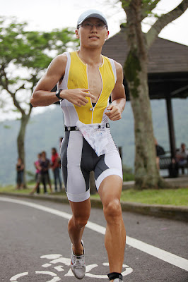

2010 蓮花盃

雖然這次蓮花盃成績退步了！游泳和自行車都變慢很多！但卻比得好高興，看到 Ben 和愈來愈興盛的鐵人隊。
在 M45 歲組的頒獎台上，Ben 站在第一名的位置上，像小孩子意外地拿到獎品一樣靦腆地笑著，頒獎台下面是一群鐵人隊的學生圍著他，一開始只是拍照，後來大家就開始做出各種搞笑的動作逗他，把他搞得開懷大笑。主持人邀請臺灣小姐上台與得獎的選手們合影，小姐們往中間站，第一名的 Ben 反而被擠到旁邊去，差點被擠下舞台。怎麼第一名反而被小姐冷落了。他竟然偷偷地以小碎步硬往小姐旁邊靠過去，把下面的鐵人隊員們笑成一團。
東華鐵人隊的每個成員都在慢慢茁壯中，也開始有屬於東華鐵人隊的傳統，學長與學弟之間逐漸地有著成熟團隊該有的革命情感與經驗的傳承。這一次的比賽大家都進步好多。波肥以去年 2 小時 45 分新人王的成績，已經進步到今年的 2 小時 33 分。大一的學弟曾翊豪才第一次參加三項賽就能以 2 小時 37 分完賽，獲得新人組第一名；大二的吳守弘也進到 2 小時 48 分。自己則以 2 小時 27 分取得菁英第六名。雖然退步了，但在部隊裡有一天沒一天地練習，能只退六分鐘已經心滿意足了！「明年當然還要再比一次」，比完時馬上就這樣想，「這可是我們的主場呢！」
在選手之夜的飯桌上，大家忘情地討論白日比賽的過程與各種心情。我邊在嘴裡嚼著食物邊忙著整理思緒，向波肥提問他最近練泳的心得。他提到兩側腋下的小肌群與核心肌群對游泳的重要性，尤其是背肌與側腹肌。我想變得更強，如此熱烈地想變強！也許，當兵帶給我的是沉寂後更澎湃的練習欲望，我學到了更多關於鐵人三項的知識，接下來就是用自己的身體去力行那些技術與訓練原則。
在人聲鼎沸的選手之夜裡，我強烈地想望回到花蓮練習。我想知道自己到底可以變得多強？可以進步到什麼地步？